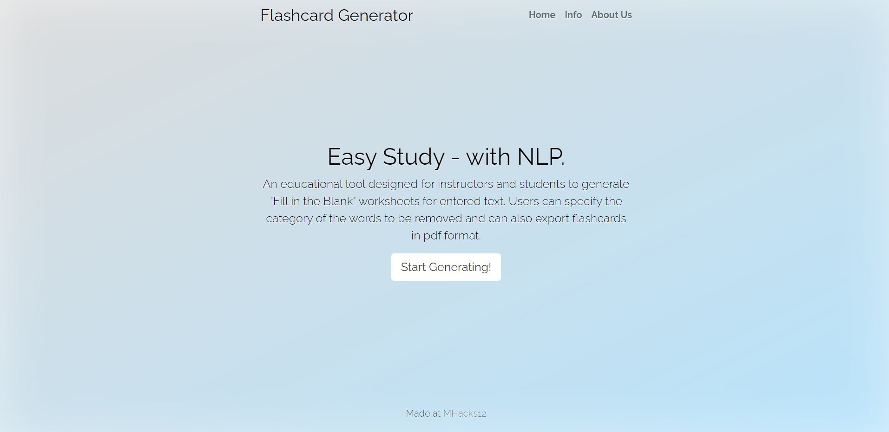

WaterBear
View on GitHubGithub
-
Custom microcontroller developed for collecting ecological data
-
Generic drivers for analaog and digital I2C and UART sensors
-
Command Line Interface (CLI) that allows users to configure the
device before deployment
-
Firmware in C++ for a low power mode to conserve battery life
during a deployment developed using PlatformIO
-
Bluetooth chip to be added soon along with a companion Android
app to retrieve data

VirtuCards
View on GitHubGithub
Watch DemoYouTube
-
Multiplayer card game developed in Unity using the Photon
plug-in in C#
-
Users can login using google Firebase, check the leaderboard and
invite friends to game rooms
-
Players can choose from a selection of available games or play a
custom game
-
Includes other features such in-game music, custom card backs
and avatars, public and private messaging in a game room, and
animated reactions
My Shell
-
Custom shell interpreter based on popular shells such as bash
built using C and C++
- Parses commands using Lex and Yacc
-
Executes commands and handles file redirection, wildcards and
pipes
- Contains builtin functions and can create subshells
-
Allows users to access a history of their most recent commands

Flashcard Generator
View on GitHubGithub
-
Uses Google Cloud Platform Natural Language Processing API to
extract keywords from study material
-
Generates flashcards in a PDF file using ReportLab Generator
-
Web interface built using HTML, CSS and JavaScript that
retrieves information from the Python backend
Dance Revolution
View on GitHubGithub
Watch DemoYouTube
- Created using an Arduino based on the popular arcade game
-
Users move the attached joystick to match the directions
displayed on the LCD
-
Music was programmed with the notes of each song and with the
output through the buzzer
- Score calculated based on the number of the matches
MIDI File Parser
- Parses .midi files in a data structures
- Searches current directory for all available MIDI files
-
Extensive research on documentation was done to efficiently
parse data
- Built using C

{kind=link}
{kind=link}
{kind=link}
{kind=link}